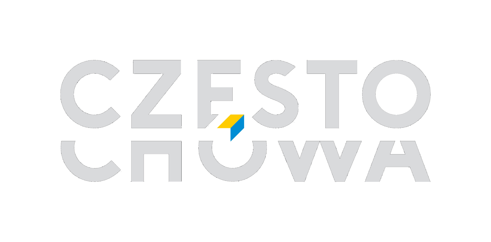
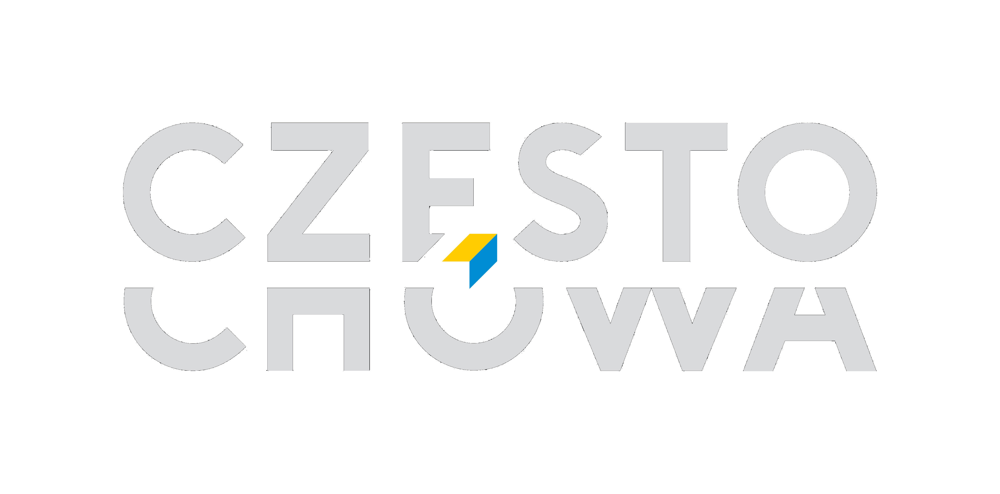
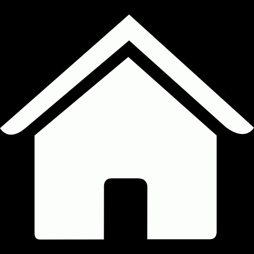
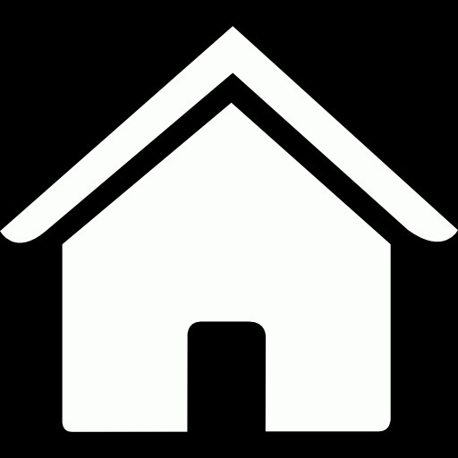

 



Częstochowa zalicza się do najstarszych osad w północno-zachodniej Małopolsce. Po raz pierwszy jej nazwę odnotowano w 1220 r. Biskup krakowski Iwo Odrowąż wystawił wówczas dokument dla klasztoru kanoników regularnych z Mstowa, w którym m.in. odnajdujemy wzmiankę o Częstochowie. W dzierżawczej nazwie osady przechowało się słowiańskie imię Częstocha, pochodzące od imienia Częstobór lub Częstomir, legendarnego jej założyciela i pierwszego posiadacza.
W 1250 r. osadę wymienia bulla papieża Innocentego IV. W kolejnych l. 1325–1327 kościół parafialny w Częstochowie jest wzmiankowany w wykazach świętopietrza, sporządzonych przez kolektorów papieskich. Ważne dla miasta dokumenty wiążą się z osobą króla Kazimierza Wielkiego, ostatniego Piasta na tronie polskim, który bawił w Częstochowie w 1354 r., gdzie spisano dokument na wójtostwo we wsi Siedlec. W 1356 r.
Kazimierz III Wielki wystawił kolejny dokument, wyraźnie sugerujący, że Częstochowa była obarczona obowiązkiem stanu, czyli powinnością goszczenia monarchy i jego orszaku podczas podróży po kraju. W tym samym roku król nadał przywilej braciom Leonardowi i Kanimirowi na lokację dwóch wsi, „jednej zwanej Częstochową i drugiej nad rzeką w dąbrowie tegoż dziedzictwa Częstochowy”.
Krzepicach 24 sierpnia 1356 roku.
W imię Pana amen. Ponieważ chcemy, aby w świetnym naszym królestwie powaga naszych postanowień była trwała i nienaruszona. Dlatego aby było znane do obejrzenia, tak obecnym jak przyszłym, obecne pismo:
Dlatego my Kazimierz z Bożej łaski król Polski, a także Krakowa, Sandomierza, Sieradza, Łęczycy, Kujaw i Pomorza ziem pan i dziedzic, pragnąc powiększać owoce urodzajne z gajów, dąbrów i lasów i ustawicznie rozszerzać, więc biorąc pod uwagę godne prośby [przedstawione] nam przez naszych wiernych, pokornie kłaniających się, mianowicie Leonarda i Kanimira braci rodzonych, dziedziców Częstochowy (Czanstochoua), obecnie dajemy i nadajemy tymże Leonardowi i Kanimirowi pełną możność lokacji, na terytorium Krakowskim (Cracouiensi), dwu wsi na prawie niemieckim mianowicie Średzkim inaczej Nouifori, jedną na starym miejscu, w którym była położona wspomniana Częstochowa, którą wieś chcemy nazwać właśnie tymże imieniem, drugą zaś wieś położoną w dąbrowie w dziedzictwie tychże zwanym Częstochowa nad rzeką, która potocznie nazywają Rybna.
Znosimy również tamże zupełnie (całkowicie) będące w wszelkie prawa polskie i prawa zwyczajowe, zwykłe i dodatkowe powinności, które temu prawu niemieckiemu mogłoby przeszkadzać i stawać na przeszkodzie.
Dlatego zwalniamy tychże wspomnianych Leonarda i Kanimira i ich następców, a także sołtysów i kmieci wspomnianych wsi lokowanych od sądów i jurysdykcji wszystkich naszego Królestwa wojewodów, kasztelanów i jakichkolwiek sędziów i wiecznie uwalniamy, w ten sposób, że przed nimi lub przez tych nie powinni być pozywani w pewnych sprawach o głowę (o zabójstwo), kryminalnych, uszkodzenia członków, a ogólnie w [sprawach]większych i mniejszych, jedynie odpowiadać będą(inaczej jak) kmiecie przed swoimi sołtysami, wyznaczonymi przez wspomnianych Leonarda i Kanimira albo ich następców, sołtysi zaś przed panami swoimi, lub przed nami, wszelako skoro powoływać się będą na dokument nasz, zaopatrzony w naszą pieczęć, wtedy przed nami będą stawać, ale nie inaczej, będą odpowiadać jak w prawie swoim niemieckim.
Wreszcie, aby wyżej wymienione wsie szybciej i
lepiej mogły być urządzone (lokowane) na tym wspomnianym prawie niemieckim, wszystkim razem i każdemu z osobna kmieciom wsi wyżej wspomnianych
dajemy i przyznajemy pełną wolność od wszelkich naszych świadczeń, opłat i robocizn [na okres] dwudziestu lat bez przerwy, licząc od daty obecnej.
Na świadectwo tej rzeczy pieczęć naszą nakazujemy przywiesić. Działo się w Krzepicach („in Crzepyce”), w dniu świętego Bartłomieja apostoła (24 sierpnia)
roku Pańskiego M CCC L szóstego (1356). W obecności Janusza prepozyta kościoła w Gnieźnie, Dobiesława kasztelana wiślickiego, Mikołaja podstolego, Jana podczaszego,
Mszczuja łowczego krakowskich, a także Prandoty burgrabiego naszego tamże w Krzepicach. Spisano ręka Grzegorza pisarza dworu naszego.
Tłumaczenie
Andrzej Kuźma, Karol Nabiałek
Częstochowa is one of the oldest settlements in north-western Lesser Poland. Its name was recorded for the first time in 1220. Iwo Odrowąż, the Bishop of Kraków, issued a document to the regular canons at the Mstów convent, where, among other things, we find Częstochowa first mentioned. The Slavic name of Częstoch, which derived from the name Częstobór or Częstomir, the legendary founder and first owner of the settlement, remained in the name of the settlement.
In 1250 the settlement name appears on the bull (papal seal) of Pope Innocent IV. In the following years (1325-1327) the parish church in Częstochowa is mentioned in the lists of the Saint Peter fee prepared by papal collectors. The important city documents are connected with King Casimir the Great, the last Piast king to sit on the Polish throne, who stayed in Częstochowa in 1354, where a document for the reeve in the village of Siedlec was written.
In 1356, Casimir the Great issued another document, clearly suggesting that Częstochowa was burdened with the duty of the state, that is, the duty of hosting the monarch and his retinue during his travels around the country. In that same year, the king granted two brothers, Leonard and Kanimir, the privilege to settle two villages, “one called Częstochowa and the other by the river in Dąbrowa of the same Częstochowa heritage”.

Gdy tron Polski obejmował Ludwik Andegaweński, sukcesor zmarłego króla Kazimierza Wielkiego, dużą połać kraju otrzymał książę Władysław II Opolczyk. Prawem lennym posiadł całą ziemię wieluńską, skrawek ziemi sieradzkiej oraz północno-zachodni fragment ziemi krakowskiej.
Opolczyk usilnie popierał rozwój miast, stąd prawdopodobnie kariera miejska Częstochowy, którą miastem nazwano po raz pierwszy w dokumencie księcia Władysława Opolczyka z 3 maja 1377 r. Późniejsze dokumenty pozwalają sądzić, że był to organizm miejski dobrze już ukształtowany.
Miasto rozwinęło się u przeprawy przez Wartę średniowiecznego traktu handlowego. W sąsiedztwie egzystowała dawna wieś, zwana po lokacji miasta Starą Częstochową, a później Częstochówką (w okolicach Rynku Wieluńskiego).
Tłumaczenie Dokumentu Opolczyka
Władysław książę opolski, wieluński, Rusi, nadaje dwóm braciom Jaskowi i Niczkowi hutę żelaza w pobliżu swego miasta Częstochowy na tem samem prawa, jakiego używa Częstochowa, wszakże z obowiązkiem oddawania księciu co sobotę żelaza na dwa pługi.
W imię Pańskie amen. My Władysław z Bożej łaski książę opolski, wieluński i ruski, na powszechną pamięć ogłaszamy: które my naszą wolą przez spisanie poniżej wykładamy by bogactwa nasze rozszerzać, braciom Jaśkowi i Niczkowi i tych samych dziedziców i sukcesorów prawnych kuźni i góry żelaznej, blisko miasta naszego Częstochowy położone, w dziedzicznych granicach, a mianowicie tam gdzie stoi kuźnica od rzeki aż po las Kadłubek i do rzeki, gdzie mieszczanie częstochowscy od podstaw budowali drogę, zresztą (w ramach) swoich powinności oraz danin, ścięte drzewo oraz resztę wyposażenia powszechnego dajemy, tamże (kuźnię i górę żelaza Jaśkowi i Niczkowi) przyznajemy oraz ofiarowujemy legalnie, zapewniając o jakości naszego miasta w eksploatacji, na wieczne posiadanie, użytkowanie oraz używanie swoje do obrotu (pieniężnego), według tego we wlasnej osobie użyteczność zostanie zobaczona w eksploatacjia;
Tak więc Ci bracia oraz we własnej osobie dziedzicy oraz prawni sukcesorzy z zapowiedzianej kuźnicy oraz swojej góry żelaznej zawsze co sobotę żelaza na dwa pługi nam oddadzą. Także jeśli zapowiedziani bracia - dziedzice oraz sukcesorzy - odtąd odejdą podczas gdy jednak im gdzieś jeszcze nie byłaby wyrządzona krzywda oraz gwałt przez starostę oraz wójta, wtedy tamtych (Jaśka i Niczka) kuźnicę z mocy prawa możemy sprzedać, podarować oraz wydzierżawić według woli naszej. Na świadectwo tej rzeczy przywieszamy naszą obecną pieczeć.
Działo się to w Częstochowie, w dniu znalezienia świętego krzyża roku pańskiego tysiąc trzysta siedemdziesiątego siódmego (AD 3 maja 1377). Obecni przewidziani mężowie (świadkowie) Hankon Gerlach, Jankon Haym, Mikołaj Kalis, Stachkon Plachta. Franciszek Franec, Bolesław z bratem Stanikonem oraz panem Mikołajem naszym kanclerzem, który obecnych zgromadzonych tu zawarł oraz wiele uwiarygodnił.
Tłumaczenie Łukasz Pabich
Brak tłumaczenia , prosze dosłac

Już po założeniu miasta, na jego obszarze znajdował się, jako ośrodek parafialny, kościół filialny pw. św. Zygmunta. Gdy Władysław II Opolczyk sprowadził z klasztoru św. Wawrzyńca koło węgierskiej Budy ojców paulinów, sytuacja uległa zmianie.
Zakonnicy otrzymali istniejące obiekty kościoła parafialnego oraz szczodre uposażenie w ziemię i liczne świadczenia w naturze. Miasto nad Wartą od czasów saskich musiało borykać się z poważną konkurencją, albowiem prawa miejskie zyskała klasztorna Częstochówka, wówczas nazywana Nową lub Górną Częstochową.
Szczególnie korzystny okres dla Częstochowy, zwany złotym wiekiem, przypadł na lata starostowania w Olsztynie królewicza Zygmunta, księcia Głogowa i Opawy, późniejszego króla Zygmunta I Starego. Miasto otrzymało liczne przywileje ekonomiczne. Wkrótce Częstochowa osiągnęła znaczenie dominujące w najbliższym regionie.
Czasy dobrobytu nie trwały długo. Zniszczenia miasta i okolicy w latach szwedzkiego „potopu” oraz w czasie kolejnych działań wojennych w XVII i XVIII stuleciu przyniosły dramatyczny regres w rozwoju Częstochowy. Zrujnowane zabudowania mieszkalne i budynki gospodarcze przez dziesiątki lat pozostawały w gruzach. Prawdopodobnie podobny los spotkał także mury miejskie, które mieszczanie wznieśli zapewne w drugiej połowie XV w.
Dopiero u schyłku istnienia pierwszej Rzeczypospolitej dało się zauważyć ożywienie społeczne i gospodarcze. Nowy etap w dziejach Częstochowy zapoczątkował rok 1826. Rada Administracyjna Królestwa Polskiego wydała wówczas akt prawny łączący Starą i Nową (Górną) Częstochowę. W ten sposób sfinalizowano zapoczątkowany w 1818 r. proces zespolenia dwóch organizmów miejskich.
Wytyczenie szerokiej arterii łączącej oba miasta stworzyło oś urbanistyczną, wokół, której poczęło się kształtować nowoczesne śródmieście. W wyniku procesu scalającego powstał w zasadzie nowy organizm miejski, posiadający spore znaczenie w skali całego kraju. W połowie drogi łączącej Starą i Nową Częstochowę, na specjalnie wytyczonym placu, w 1828 r. wzniesiono nowy ratusz.
Brak tłumaczenia prosze dosłać


Miasto Częstochowa po lokacji na prawie magdeburskim w XIV w. uzyskało kształt typowy dla średniowiecznych układów urbanistycznych. W centrum miasta znajdował się prostokątny Rynek mocno wydłużony na osi północ-południe, zakreślony murami miejskimi. Stanowił centrum handlowe, główny węzeł komunikacyjny i miejsce rezydowania władz miejskich.
Od zachodu zamykała go pierzeja oparta o oś przebiegającego przez miasto „traktu królewskiego”, czyli dzisiejszych ulic Targowej i Senatorskiej. Od wschodu linia zwartej zabudowy w przybliżeniu przebiegała tak, jak to obserwujemy do dzisiaj (z ulicą Stary Rynek włącznie), natomiast wschodni blok przyrynkowy zamykała od tyłu ulica Garncarska. Krótsze pierzeje Rynku wyznaczają dzisiaj fragmenty ulicy Mirowskiej (od południa) i Mostowej (od północy). Z Rynku w średniowieczu wyprowadzono łącznie dziesięć ulic, które prowadziły do ciągu ulic obrzeżnych, obiegających krańce zwartej zabudowy miasta, łącząc się z nimi pod kątem prostym. W przypadku układu urbanistycznego Częstochowy ciągi komunikacyjne obrzeżne najprawdopodobniej stanowiły z czasem ulice przymurne, które można wskazać na linii ulicy Nadrzecznej, przechodzącej następnie w ulicę Przesmyk – dalej na nieistniejącej już dzisiaj od zachodu ulicy Gęsiej i od północy ulicy Spadek. Można przypuszczać, że od pierwotnego ukształtowania średniowiecznego miasta do XVI w. zmiany te nie były aż tak wielkie.
Pejzaż architektoniczny dawnej Częstochowy poznajemy z XVII-wiecznych przekazów ikonograficznych Jana Bensheimera, zdobiących dzieło Stanisława Kobierzyckiego Obsidio Clari Montis Czestochoviensis i Jana Aleksandra Gorczyna. Oba dzieła sugerują największą koncentrację zabudowań miejskich przy Rynku. Są to budowle murowane z podcieniami wyraźnie widocznymi w pierzei zachodniej. Posiadały one zróżnicowaną wysokość, sięgającą jednej lub dwu kondygnacji, dodatkowo podkreśloną wysokimi, dwuspadowymi dachami. W pejzażu miasta dominują bezsprzecznie dwie najważniejsze budowle: gmach ratusza oraz bryła kościoła parafialnego z klasztorem.
W Częstochowie, podobnie jak w większości miast polskich, przeważała zabudowa drewniana. Cecha ta przetrwała stosunkowo długo, o czym informują nas źródła jeszcze z XIX w. Według planu z 1822 r. domy murowane dominowały jedynie w południowym bloku zwartej zabudowy, ale już przy ulicy Garncarskiej murowane domy frontowe posiadały drewniane zabudowania gospodarcze.
Liczne klęski żywiołowe, epidemie, pożary oraz zniszczenia wojenne w ciągu XVII w. zahamowały rozwój miasta. Szczególna dewastacja zabudowań Częstochowy miała nastąpić w czasie szwedzkiego „potopu”, u schyłku 1655 i na początku 1656 r. Dodatkowo kryzys demograficzny i gospodarczy, obserwowany od połowy tego stulecia, nie sprzyjał odbudowie, a tym bardziej nowym inwestycjom budowlanym.
Częstochowa do końca okresu przedrozbiorowego w zasadniczych zrębach zachowała układ przestrzenny nadany jej w średniowieczu. Rozplanowanie przestrzeni trwało więc z niewielkimi korektami prawie cztery i pół wieku, by ulec poważnym zakłóceniom dopiero w ciągu XIX i XX stulecia.
Drugim ważnym obszarem wymierzanym w czasie akcji lokacyjnej był plac kościelny. Jego położenie względem centralnego Rynku stanowiło jeden z najważniejszych elementów założenia urbanistycznego i w znacznym stopniu wpływało na planowanie w przestrzeni dalszej zabudowy. W Częstochowie wspomniany układ oparty został na dwóch przecinających się pierzejach, na styku Rynku i placu kościelnego, czyli owe dwa prostokąty przystawały do siebie w ten sposób, że południowo-zachodni narożnik Rynku stykał się z północno-wschodnim narożnikiem placu kościelnego. Układ taki, często występujący w urbanistyce późnośredniowiecznej, można uznać za modelowy.
Częstochowski plac kościelny był stosunkowo rozległy, zajmował przestrzeń zamkniętą ulicami: Targową, Przesmyk, Krakowską i Mirowską. Jego powierzchnia wynosiła ok. 1 ha. W północnej jego części powstała bryła orientowanej budowli kościoła pw. św. Zygmunta. Dopiero u schyłku średniowiecza na południe od kościoła wzniesiono budynek klasztorny.
Sądzi się, że Częstochowa przynajmniej do połowy XVII w. skrywała się za obwodem baszt oraz kilku węzłów bramnych. Podstawy dla przyjęcia tej hipotezy dały stosunkowo późne i nieliczne wzmianki w źródłach pisanych oraz jeden z widoków miasta wykonanych w drugiej połowie XVII w.
Najwcześniejsza informacja o urządzeniach warownych Częstochowy pochodzi z dokumentu króla Zygmunta I Starego, wystawionego w 1531 r. Tam wspomniany został młyn przed „bramą miasta Częstochowy”. Nieco późniejsza wizytacja parafii z 1598 r. opisuje cmentarz przed bramą, poza murami miejskimi, w innym natomiast miejscu wspomina folwark plebański przed bramą krakowską. Wiadomo, że folwark, ogrody i sadzawki kościelne znajdowały się od strony południowej, zatem wzmiankowana brama krakowska zlokalizowana była u wylotu drogi z Krakowa, przez Żarki, podążającej bezpośrednio przed Częstochową (od Błeszna) lewym brzegiem rzeki.
Jedynie na sztychu Jana Aleksandra Gorczyna dopatrzyć się można fragmentu murów miejskich z basztą, widocznych od strony południowej. Być może tę właśnie basztę i ten odcinek muru wspomina lustracja z 1660 r., kiedy to ówczesny wójt Aleksander Bełdowski rościł sobie pretensje do posiadania pewnego fragmentu obwarowań miejskich. Niestety, widok sporządzony przez Jana Aleksandra Gorczyna jest jedynym przekazem ikonograficznym uwzględniającym mury miejskie, nie ukazuje ich bowiem wykonany nieco wcześniej miedzioryt Jana Bensheimera
Wzmianki o ufortyfikowaniu miasta Częstochowy pojawiają się w źródłach późno i stosunkowo wcześnie znikają, chociaż jeszcze w XVIII i XIX w. mury miejskie pozostawały w pamięci mieszczan, dobrze widać utrwalone w miejscowej tradycji.
W literaturze naukowej przyjął się pogląd, że budowa murów mogła być dokonana bezpośrednio po najeździe i splądrowaniu Częstochowy przez morawskiego najemnika i raubrittera Buriana Puklicę z Pozoric, grasującego w tych okolicach na czele jakiejś części armii Ścibora Towaczowskiego z Cimburka, wodza czeskiego, który w imieniu króla Jerzego z Podiebradów miał oblegać Wrocław.
Przebieg murów ostatecznie ustalono w następujący sposób: od zachodu – na linii ulic Krakowskiej i Warszawskiej, od północy – łagodnym łukiem okalającym miasto przy ulicy Spadek, na wschodzie – wzdłuż ulicy Nadrzecznej, i od południa, również łukiem, zamkniętej przy ulicy Przesmyk. Bramy miejskie wskazane zostały w miejscach prawdopodobnych wlotów wspomnianych dróg międzydzielnicowych: jedna od południa (krakowska), za którą na terenie miasta wiodła ulica Targowa; druga od północy, na przedłużeniu ulicy Senatorskiej, tuż za skrzyżowaniem z ulicą Spadek; od wschodu, przy moście na Warcie, gdzie gościniec na terenie miejskim przechodził w ulicę Mostową.
Brak tłumaczenia